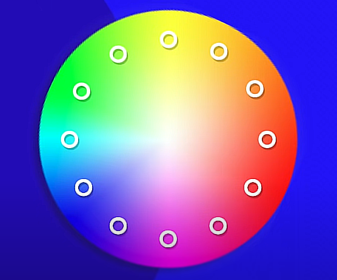
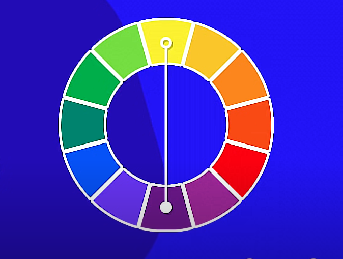
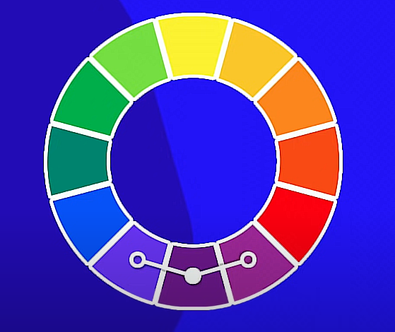
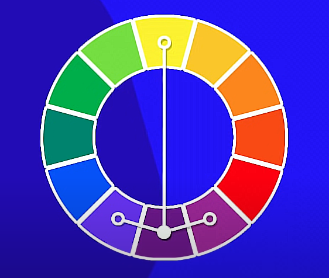
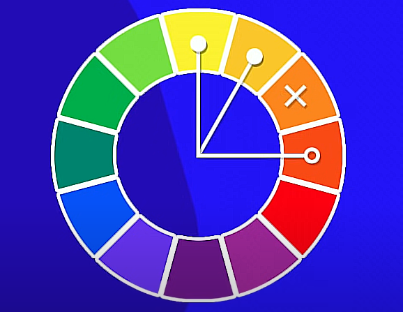
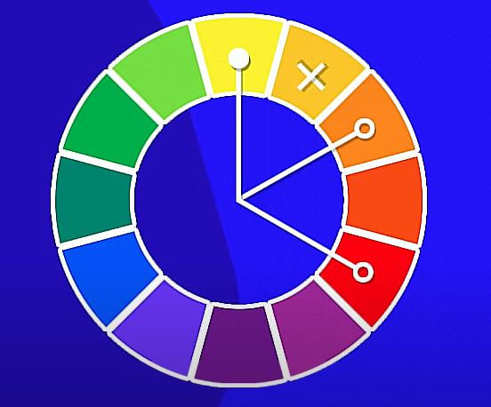
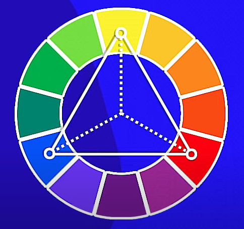
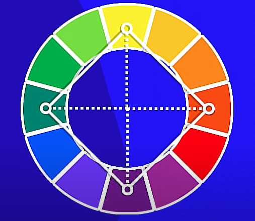
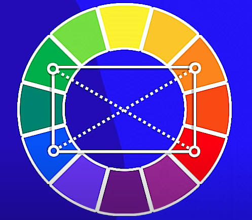
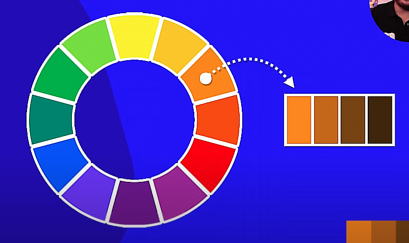

Harmonia das Cores
Círculo cromático

Cores complementares

Cores Análogas

Cores análogas junto de complementares

Cores análogas relacionadas

Cores intercaladas

Cores triádicas

Cores em quadrado

Cores tetrádicas

Monocromia
